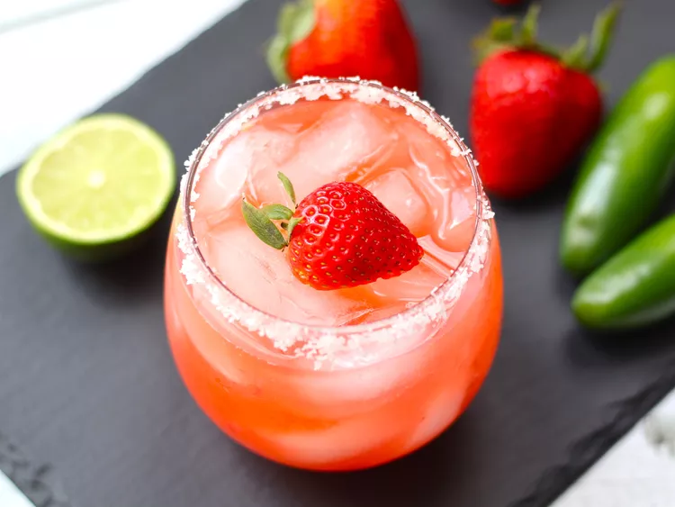

Strawberry Jalapeno Margarita

Muddle fresh strawberries and jalapeños to spice up your margarita game for any seasonal celebration, like Cinco de Mayo, thanks to this recipe from Allrecipes Allstar
Ingredients
- 1 teaspoon coarse salt
- 1 lime wedge
- 2 cups ice, or as needed
- 3 large strawberries, sliced
- 3 slices fresh jalapeno
- 2 fluid ounces silver tequila
- 1 fluid ounce triple sec
- 1 fluid ounce lime juice
- 3/4 ounce simple syrup
Directions
- Sprinkle salt onto a plate. Moisten the rim of a glass with lime wedge. Press the moistened rim into the salt. Fill the glass with ice.
- Fill a cocktail shaker with jalapeno slices and strawberries, reserving 1 slice of strawberry for garnish. Use a muddler to crush the jalapeno and strawberries to release their juices. Add tequila, triple sec,
lime juice and simple syrup to the shaker and add 1 cup of ice. Seal and shake vigorously until outside is frosted, 10 to 15 seconds.
- Strain margarita into the glass and garnish with remaining strawberry slice, if desired.